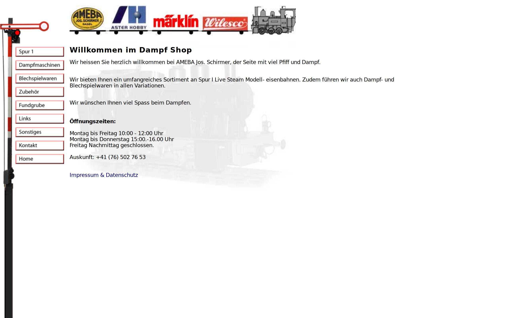
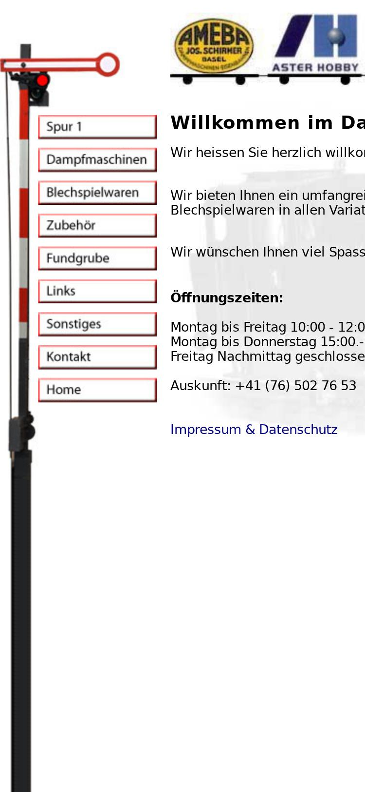

Schirmer's Dampf-Shop
Aster Spur 1 — Modelldampflokomotiven.
Was wir tun
- Aster Spur 1
- Modelldampflokomotiven
Über uns
AMEBA Jos. Schirmer führt Modelldampflokomotiven der Marke Aster in Spur 1. Aktuelles Sortiment und Kontakt finden Sie auf www.dampf-shop.ch.
Aktuelle Website
Zum Vergleich: so sieht die bestehende Website heute aus.

